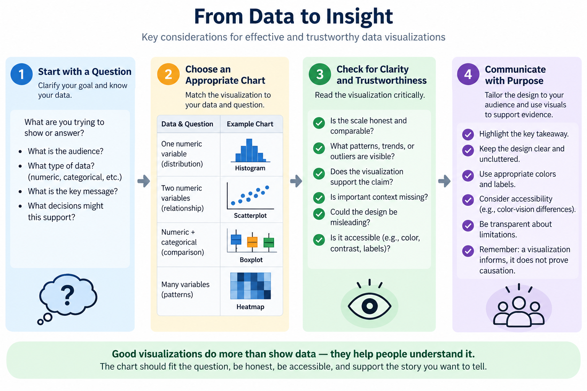

03 Data Visualization#
“Since our eyes and brains are not wired to detect patterns in large data tables filled with text and numbers, communication about data and data-driven results rarely comes in the form of raw data or code output.(Chapter 5)”
Big Idea#
Visualization is a core part of data science. Visual exploration appears early in datascience lifecycle during cleaning and remains essential during exploratory data analysis (EDA), model assessment, and communication to stakeholders.

Fig. 4 Lifecycle: From Data To Insight.#
3.1 Why Visualization Matters#
The important patterns are often not visible in text form. A histogram, scatterplot, heatmap, or boxplot can reveal shape, spread, clustering, outliers, and relationships far more quickly than a spreadsheet.
This is why visualization is central to EDA. During exploration, a chart is used as a diagnostic device: it helps us ask, “What seems unusual here? What is changing? Which patterns are strong and which might be noise?”
The same visual reasoning matters later when we communicate results. A chart can support a decision, but it can also hide important nuance if the scales are misleading, the encodings are poor, or the audience is not considered.
Note
A good chart should help a reader answer a question. A weak chart often only recreates the data in a more colorful form.
3.2 Choosing a Chart That Fits the Question#
The right visualization depends on the type of variable being examined and the kind of question you are trying to answer. This is one of the most important skills in data analysis: the graph should fit the data and the claim.
Data and question |
Common choice |
What the chart is good for |
|---|---|---|
One numeric variable |
Histogram or boxplot |
Distribution, skewness, spread, outliers |
Two numeric variables |
Scatterplot |
Relationship, trend, clustering |
One numeric and one categorical variable |
Side-by-side boxplots or grouped bar chart |
Differences across groups |
Many numeric variables |
Heatmap or correlation matrix |
Patterns among variables |
A histogram helps us see whether a distribution is symmetric, skewed, flat, or sharply peaked. A boxplot makes it easier to compare the center and spread of a variable across groups. A scatterplot shows the relationship between two numeric variables and can reveal whether the relationship is linear, nonlinear, tight, or weak. A heatmap helps summarize many pairwise relationships at once.
These are different ways of asking a question and different ways of revealing evidence. A boxplot may be better than a bar chart when the goal is to show variation across groups. A scatterplot may be better than a line chart when the goal is to show the raw relationship between two variables rather than a time trend.
3.3 Learning to Read a Visual, Not Just Produce One#
The goal of EDA is not to create the most elaborate chart. The goal is to look critically at a graph and decide what it is telling us.
Here are a few questions to ask when reading a visualization:
What variable or relationship is being shown?
What is the main claim the chart is trying to support?
Is the scale honest and comparable?
Are there outliers or unusual patterns that matter?
Does the plot show the whole story, or does it hide important context?
For example, if a graph compares donation rates across countries, a viewer should ask whether the comparison is based on raw counts or rates adjusted for population. Without that context, a chart may look simple but produce a misleading conclusion. The same issue appears in many domains: counts can be large because a group is large, not because it is especially high relative to its size.
3.4 Misleading Visualizations and Accessibility#
A chart that is technically valid can still be poor for interpretation. Visuals become misleading when they hide context, distort scale, or choose encodings that make the story harder to see.
Common problems#
Mismatched axes: two side-by-side charts appear to show similar trends when their scales are not comparable.
Overplotting: too many points overlap and create a dense, unreadable block.
Distorted axis ranges: a truncated y-axis can make a small change look dramatic.
Poor color choices: a chart may look colorful but still be difficult for some readers to interpret.
Overuse of decoration: unnecessary flourishes can distract from the message.
Accessibility is part of visual quality, not an optional add-on. A chart that relies on red and green alone may be difficult for readers with color-vision differences. A design that shows weak contrast or tiny labels may be hard to read for many audiences.
3.5 Exploratory vs. Explanatory Visualization#
The same data can be visualized in more than one way, depending on the purpose.
Exploratory visualization#
Exploratory visualizations are used while a data analyst is investigating. They are often rough, iterative, and designed to support question generation. The goal is not necessarily to make a beautiful figure; the goal is to help the analyst discover patterns, anomalies, and unexpected structure.
Examples:
a histogram to inspect distribution shape
a scatterplot to look for a relationship
a matrix of pairwise plots to compare many variables
Explanatory visualization#
Explanatory visualizations are designed for an audience that needs to understand a conclusion. They are usually more polished and more intentional. The figure should emphasize one clear message and remove unnecessary clutter.
Examples:
a highlight-and-callout chart comparing one region against the rest
a carefully titled plot showing a key trend over time
a simplified dashboard that explains which decisions or patterns matter
The shift from exploratory to explanatory visualization is important because it reminds us that a chart is a communication tool. A good explanatory chart does not merely display data; it helps the audience understand a conclusion without guessing what the writer intended.
Key Takeaways#
Visualization is a core part of data science because it helps us detect patterns and communicate findings.
The best chart depends on the question and the type of variables being studied.
A strong visualization supports interpretation and does not hide the real story.
Misleading scales, overplotting, poor color choices, and inaccessibility can all distort understanding.
Exploratory plots help us investigate; explanatory plots help us communicate.
Human judgment remains essential, even when AI can generate graphics quickly.
References#
This module draws on selected research articles, open educational resources, and professional documentation.
Joseph F. Hair, William C. Black, Barry J. Babin, and Rolph E. Anderson. Multivariate Data Analysis. Pearson, Upper Saddle River, NJ, 7 edition, 2010.
Barter, R., & Yu, B. Veridical Data Science. Chapter 5: Exploratory Data Analysis.
https://vdsbook.com/05-data_viz